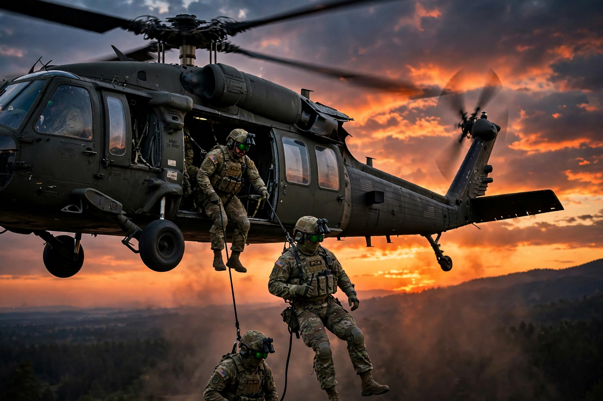

| Famous units | SAS (UK), Navy SEALs & Delta Force (US), Spetsnaz (Russia), GIGN (France) |
|---|---|
| Roles | Reconnaissance, direct action, counter-terrorism, unconventional warfare, military assistance |
| Selection | Extremely demanding; high attrition rates |
Special forces or special operations forces (SOF) are military units trained to conduct special operations. NATO defines special operations as "military activities conducted by specially designated, organized, selected, trained and equipped forces using unconventional tactics, techniques, and modes of employment".
Special forces emerged in the early 20th century and grew greatly during the Second World War, when units such as the British Commandos, the Special Air Service (SAS), the Special Boat Service, the US Army Rangers and the OSS operated behind enemy lines. In the later 20th century, counter-terrorism and hostage-rescue roles became central after incidents such as the 1972 Munich massacre.
Selection courses are deliberately brutal tests of endurance, navigation and mental resilience; pass rates of 10–20% are common. Survivors undergo long continuation training in parachuting, diving, demolitions, languages, medicine and close-quarters battle, depending on the unit's role.
The United Kingdom fields the SAS, SBS and Special Reconnaissance Regiment under UK Special Forces. The United States coordinates the world's largest SOF community through USSOCOM, including the Army's Delta Force and Green Berets, the Navy SEALs, Air Force special tactics and Marine Raiders. Russia maintains Spetsnaz formations under the GRU and FSB; France the COS units including the GIGN's military counterparts; Germany the KSK; Israel Sayeret Matkal; India the Para SF, MARCOS and Garud forces.
The secrecy, selection ordeals and daring raids of special forces have made them a staple of films, memoirs and video games, though serving personnel generally maintain a low public profile.
See also: Hostage · Special Air Service · Navy SEALs